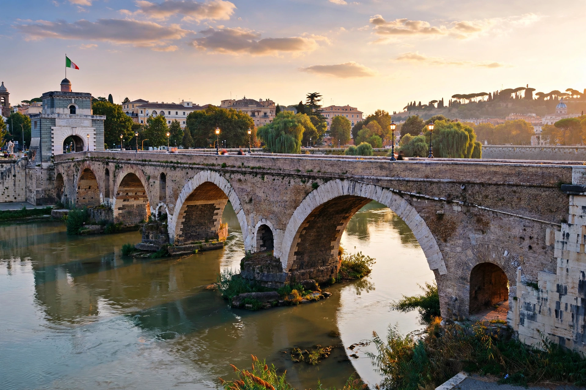

| Battle of the Milvian Bridge | |
|---|---|
| Date | 28 October 312 AD |
| Location | Milvian Bridge, Rome |
| Result | Constantinian victory |
| Belligerents | Forces of Constantine I vs. forces of Maxentius |
| Commanders | Constantine I; Maxentius (killed) |

The Battle of the Milvian Bridge took place between the Roman emperors Constantine I and Maxentius on 28 October 312 AD. It takes its name from the Milvian Bridge (Ponte Milvio), a strategically vital crossing of the Tiber River on the Via Flaminia just north of Rome. Constantine won the battle and embarked on the path that led him to end the Tetrarchy and become the sole ruler of the Roman Empire. Maxentius drowned in the Tiber during the fighting.
Maxentius, son of the former emperor Maximian, had seized Rome in 306 and was regarded by Constantine and the other tetrarchs as a usurper. After securing northern Italy in 312, including victories at Turin and Verona, Constantine marched on Rome. Rather than wait behind the Aurelian Walls, Maxentius chose to give battle with his back to the river, demolishing part of the stone bridge and substituting a temporary pontoon bridge of boats.
According to Eusebius of Caesarea, before the battle Constantine saw a cross of light in the sky above the sun bearing the Greek words "Ἐν Τούτῳ Νίκα" — "In this sign, conquer" (in hoc signo vinces). That night, in a dream, Christ explained that he should use the sign against his enemies, and Constantine had his soldiers mark their shields with the Chi-Rho (☧), the first two letters of Christ's name in Greek. Lactantius gives a related account.
Constantine deployed his forces so that his cavalry charged Maxentius' horse on both flanks, driving them into the river; the Maxentian infantry, pressed back, attempted to flee across the narrow pontoon bridge, which collapsed or became impassable under the crush. Maxentius was among those who drowned. His body was recovered the next day and his head paraded through the city before being sent to Africa as proof of his death.
Constantine entered Rome on 29 October 312 and was acclaimed sole emperor in the West. The following year he issued (with Licinius) the Edict of Milan, granting legal toleration to Christianity. The Arch of Constantine, dedicated in 315, commemorates the victory, and the battle is traditionally seen as a turning point in the Christianisation of the Roman world.
See also: First Council of Nicaea · Edict of Milan